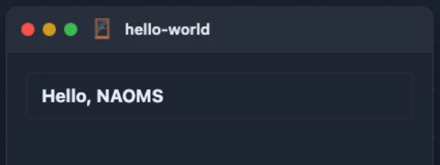

Build Your First NAOMS Package
A package is a small, self-contained app that lives inside NAOMS. Scaffold one, boot it in a real daemon, and open its screen — every command below was actually run against the current scaffolder before this was written.
NAOMS's own landing page puts it directly: the primary way to build on NAOMS is a package — "a small, self-contained app that lives inside the platform." Client apps that connect to someone else's daemon over the network are a real, supported thing too, and we'll close with that. But packages come first, because a package runs inside the daemon: it gets a manifest-checked, capability-gated slice of the same graph and chain everything else in NAOMS already uses, instead of talking to it from the outside.

This piece scaffolds the smallest real package that can exist — one screen, one
declared write capability — and runs every step for real: the scaffold command,
the unit test, a boot inside an isolated daemon, and a browser session that
opens the screen and reads back a real node. Every command below ran clean,
first try, against the current naoms package init. That's new: an earlier
draft of this exact tutorial hit three separate scaffold-template bugs and a
boot-time refusal, all now fixed — the "What was fixed" section near the end has
the commits, for anyone comparing notes against an older checkout.
What a package is
A NAOMS package is a directory under src/packages/<name>/ containing at
minimum a manifest — a typed object naming the package, its version, and
what it's allowed to touch — and usually a screen: a small JavaScript module
the shell loads as a browser tab or canvas window. The daemon discovers packages
by reading the directories under src/packages/ at boot; there is no separate
list to add your package's name to.
The manifest is the single source of truth. Before any of your code runs, the daemon reads it and decides: what graph node kinds can this package read or write, what chain event types can it emit, and what trust level does a user need before they're even allowed to install it. Two fields matter most for a first package:
capabilities— named permissions your package exposes, each with a minimum trust level (connected,trusted,guardian, orowner). This is what a user is shown, and asked to approve, at install time.chainTypes/graphTypes— which chain event types your package can append, and which graph node kinds it can read or write. Nothing outside these declarations is reachable from your package's own code (with one founder-owned exception covered below).
Scaffold it
The docs at docs/build/packages/getting-started.md walk through building a
manifest by hand, using the real in-tree weather package as the worked
example. That's the right way to learn the field shapes. But there is also a
scaffolding command, naoms package init, that generates a working skeleton in
one shot — and as of this writing it isn't mentioned in the getting-started
guide at all, so if you only read that page you'd never find it. It's real and
it works:
cd src/packages
naoms package init --name hello-world --type feature --category productivity --uiOutput:
Creating hello-world/ ...
hello-world/
├── manifest.ts
├── namespace.ts
├── public.ts
├── ui/
│ └── hello-world-tab.js
├── enrichers/
├── materializers/
├── reducers/
├── routes/
├── handlers/
├── tests/
│ ├── uc-hello-world.test.ts
│ ├── integ-hello-world.test.ts
│ └── e2e-hello-world.ts
└── deno.json
Capability disclosure (feature):
This package is behaviour-bearing. A clean `deno check` proves
it TYPE-CHECKS — it does NOT prove it RUNS. To execute it you need
a running NAOMS daemon: the daemon loads, signs, installs and runs
the package. It cannot run out-of-tree from a bare `deno check`.
Next steps:
cd hello-world
naoms dev
naoms test
naoms manifest validateThat capability disclosure is worth reading twice. A green type-check is not evidence the package works — it only proves the TypeScript is well-formed. Below, we boot a real daemon and open a real browser tab, because that disclosure is correct and this walkthrough is about proof, not type-checking.
naoms package init --name <n> --type feature --category <c> --ui also runs
interactively if you omit --name — it prompts for each field instead. The
valid --category values and the --type values (feature, plugin, app,
library, and a plugin-flavoured discriminated union of sub-types) are
enumerated in init.ts; get either one wrong and the command refuses with the
full valid list rather than guessing.
What it generates — and this is the whole thing, unedited
Here is the generated manifest.ts, exactly as written by the command above —
nothing added, nothing trimmed:
// src/packages/hello-world/manifest.ts
import type { NaomsFeatureManifest } from "@naoms/sdk";
export const MANIFEST: NaomsFeatureManifest = {
id: "hello-world",
name: "Hello World",
version: "0.1.0",
description: "TODO: describe your feature",
category: "productivity",
ontologyNamespace: "naoms:hello-world/",
schema: {
type: "object",
properties: {
id: { type: "string" },
title: { type: "string" },
},
required: ["id", "title"],
},
chainTypes: [{
chainType: "hello-world",
access: "read-write",
eventTypes: [
{ type: "hello-world.created", nodeKind: "hello_world" },
{ type: "hello-world.updated", nodeKind: "hello_world" },
],
}],
defaultInstallContext: "personal",
graphTypes: [{
nodeType: "hello_world",
access: "read-write",
}],
wsMessageTypes: [
{ type: "hello-world.list", direction: "inbound" },
],
eventTypePrefixes: ["hello-world."],
uiModule: "hello-world/hello-world-tab.js",
uiExtraScripts: [],
headless: false,
scriptType: "classic",
bootstrapImportmapEntries: {},
bootstrapModules: [],
capabilities: [
{ name: "hello-world.view", trustLevel: "connected" },
{ name: "hello-world.create", trustLevel: "connected" },
],
dependencies: [],
permissions: {
minTrustLevel: "connected",
domainScopable: true,
hiveConfigurable: true,
},
};Two fields are worth calling out because they only exist to prevent silent failures, and a hand-written manifest is where people most often forget them:
defaultInstallContext: "personal". Any built-in package whosechainTypes[]has write access must say which context (personal,friendship, orhive) its default authority lands in — no silent "personal" fallback for a package that might actually belong on a hive (src/packages/pkg-manager/pkg-install/default-install-context.ts, 1640 M6). The scaffold sets it topersonalfor you, the common case; change it if your package's default authority should live elsewhere.uiModule: "hello-world/hello-world-tab.js". This is<packageId>/<filename>, matching how the daemon actually serves it:src/core/transport/http-transport-static.ts's static server serves a package'sui/directory contents at/features/<packageId>/<filename>— theui/part is the on-disk directory, never part of the served URL or this field.
And the generated screen, also unedited:
// src/packages/hello-world/ui/hello-world-tab.js -- loaded by 614 Feature
// Loader as a CLASSIC script (no imports). DOM is built with
// createElement/textContent -- never innerHTML of untrusted values -- so
// there's no HTML-escaping helper to reach for.
(function () {
"use strict";
if (!window._naomsFeatures) window._naomsFeatures = {};
function el(tag, cls, text, style) {
var e = document.createElement(tag);
if (cls) e.className = cls;
if (text != null) e.textContent = String(text);
if (style) e.style.cssText = style;
return e;
}
window._naomsFeatures["hello-world"] = {
async init(ctx) {
this.ctx = ctx;
this.container = ctx.container;
// Classic scripts have no shared stylesheet to reach, so the root
// gets real padding inline -- a bare container renders flush in the
// window's corner with no visual structure at all.
this.container.style.cssText =
"padding:16px;color:#e6ecf9;font:14px system-ui,sans-serif;";
},
async activate() {
const resp = await this.ctx.graphQuery({
type: "hello_world",
orderBy: ["updatedAt:desc"],
limit: 50,
});
const items = this.ctx.flattenNodes
? this.ctx.flattenNodes(resp)
: (resp && resp.nodes) || [];
this.container.innerHTML = "";
const list = el(
"div",
"hello-world-list",
null,
"display:flex;flex-direction:column;gap:8px;",
);
items.forEach((item) => {
const row = el(
"div",
"hello-world-item",
null,
"padding:10px 12px;border:1px solid #2a2a35;border-radius:6px;",
);
row.dataset.id = item.id;
row.appendChild(
el(
"h3",
null,
(item.properties && item.properties.title) ?? item.title ??
"Untitled",
"margin:0;font-size:15px;",
),
);
list.appendChild(row);
});
this.container.appendChild(list);
},
deactivate() {},
destroy() {
if (this.container) this.container.innerHTML = "";
},
};
})();Notice ctx.container — the feature loader hands your screen the already-scoped
DOM node directly; there's no id to look up. Notice, too, that every element
el() creates takes an inline style argument: classic scripts have no
<link> tag or shared class of their own to reach for, so real layout (the
padding/border/gap values above) has to be set the same way every real
in-tree classic-script screen sets it — inline, per element. And notice the
query uses type: "hello_world" — underscore, matching the manifest's
graphTypes[{ nodeType: "hello_world" }] — not "hello-world" (the package id,
with a hyphen). The daemon's capability gate lowercases the query's type and
checks it against the manifest's declared graphTypes[].nodeType values; it has
no idea what the package is called. Get the two confused in a hand-written
package and your query silently asks for a node type nothing ever writes — not
an error, just permanently empty.
Run its test
Every package's tests live under src/packages/<name>/tests/, and the prefix on
the filename says which tier it is: uc- for a pure unit test (no daemon, no
DB), integ- for one that spawns a real daemon, e2e- for a full Puppeteer
run. The scaffold generates a uc- test that checks the manifest's own shape:
naoms test run src/packages/hello-world/tests/uc-hello-world.test.tsrunning 2 tests from ./src/packages/hello-world/tests/uc-hello-world.test.ts
hello-world: manifest has required fields ... ok (1ms)
hello-world: enrichers (if any) have valid event patterns ... ok (0ms)
ok | 2 passed | 0 failed (2ms)Never run deno test directly against a package file — it bypasses the consent,
egress, policy and audit boundaries naoms test run enforces. Always go through
the CLI.
Validate the manifest
$ naoms manifest validate
Validating manifest.ts...
✓ Required fields present
✓ Graph types don't conflict with protected node types
✓ Edge types don't conflict with reserved edges
✓ ontologyNamespace format valid
✓ Version format valid
Manifest valid ✓A green unit test and a clean manifest validation both stop short of the thing a user actually sees, though — the type-check disclosure above is right about that. Next: boot it.
Boot it
We started an isolated daemon — a non-production port, and NAOMS_DIR,
NAOMS_DATA_DIR, NAOMS_HOME and HOME all pointed at a scratch directory so
nothing touches a real identity:
export NAOMS_DIR=/tmp/hello-world-test/dir
export NAOMS_DATA_DIR=/tmp/hello-world-test/data
export NAOMS_HOME=/tmp/hello-world-test/home
export HOME=/tmp/hello-world-test/home
naoms daemon start --port 34177 --no-watchdogIt reached full readiness on the first try, with no manifest edits, in about 44 seconds — capability discovery genuinely works with zero registration step beyond dropping the directory in place:
[scoped-context:INFO] scoped context built {"packageId":"hello-world","graphReads":1,"chainWrites":2,"wsTypes":0}
...
[boot-summary:INFO] BOOT[8/8]: NAOMS daemon ready {"packages":130, ...}
[boot:boot-phase-ledger:INFO] BOOT[8/8]: daemon fully ready {"elapsed_ms":44317}Onboard a founder identity against it
With the daemon ready, we ran the real founder-onboarding ceremony against it through the CLI — the same command a fresh install runs, pointed at the isolated port:
naoms onboard founder --daemon-url ws://127.0.0.1:34177 --yes --no-local-llm --allow-no-resume --jsonThis is the ceremony that mints an identity from nothing: it generates a 24-word
recovery phrase, creates the encrypted vault, runs FROST keygen for the signer,
and writes the identity's genesis commit. --allow-no-resume skips wrapping the
mnemonic under an app password up front (fine for a disposable test identity; a
real install sets NAOMS_VAULT_APP_PASSWORD so a headless resume works after a
restart). The command's own --json output on success included the real
recovery phrase:
{
"status": "onboarded",
"founder_did": "did:key:...",
"device_did": "did:key:...",
"recovery_phrase": "<24 real words>"
}See it running in the browser
A green unit test, a clean manifest validation, and a clean daemon boot all stop
short of the thing a user actually sees, so we opened the real NAOMS app shell
in a browser, pointed at the onboarded daemon, and logged in with the 24-word
recovery phrase from the ceremony above (http://<host>:<port>/app.html → "Use
mnemonic instead" → paste the phrase → choose a password for this browser, since
it's a new device that needs its own local key unlocked once). From the app
drawer, "Hello World" is listed under its declared category: "productivity",
and opening it mounts the unmodified script above inside its own canvas window.
The window opened with an empty list — correct, since this identity's chain had
never written a hello_world node. We then wrote one for real, from the same
browser session, through the package's own declared write capability:
await ctx.chainAppend("hello-world", "hello-world.created", {
id: "hw-1",
title: "Hello, NAOMS",
});That returned a real, signed chain commit — content hash, signer DID, the whole
envelope — and the very next activate() call (the same
ctx.graphQuery({ type: "hello_world" }) shown in the script above) read it
straight back:
Nothing in that screenshot is a fixture: the title text is the title property
of a graph node materialized from a chain commit this browser session actually
signed and sent, one call up the stack, moments before the shutter. The card
border and spacing around it are the scaffold's own default styling, not
hand-added for the screenshot — see the layout note in "What was fixed" below.
A permission boundary worth knowing about, verified live
We also called ctx.graphQuery({ type: "contact" }) from that same live screen
— contact is not in this manifest's graphTypes[] at all. It did not throw.
It returned real data: this identity's own contact nodes, DIDs included. The
reason is in clients/browser/public/feature-context-factory.js, a few lines
above the capability check: browser-side, a package discovered locally on a
single-owner daemon is tagged founder-owned (_isFounderOwnedFeature,
clients/browser/public/founder-owned.js), and founder-owned packages are
trusted at every gate — the graph-read check, the graph-write check, and the
WS-type check all short-circuit for them, by design (738 M0.6.47: "the manifest
IS the grant"). graphTypes[] is real enforcement against a genuinely
third-party package a founder has installed from someone else (that half is read
from the source; we did not install a third-party package to watch the refusal
happen); it is not enforced against a package that ships in the founder's own
src/packages/ tree, because on today's single-owner NAOMS, that code already
is the owner's. If you are testing a permission boundary, test it with a
non-founder-owned package — a same-manifest built-in will not show you the
refusal.
What you can't get from a green test
Every claim in this walkthrough after "Run its test" was invisible to that
test's green result: the manifest passed shape validation, deno check passed,
and the scaffold's own type-check disclosure is honest about exactly this — it
proves the TypeScript compiles, not that the package boots, let alone that its
screen renders in a browser and round-trips a real chain write. The only way to
know a package actually works is to boot a daemon with it installed, open the
screen for real, and write something through it.
What was fixed (so an older checkout doesn't surprise you)
An earlier pass at this exact tutorial ran into real defects in the scaffolder
itself, not in this article's prose. They're fixed on origin/main now, cited
here rather than shown as current steps because reproducing a repaired bug on
purpose isn't a tutorial's job:
naoms manifest validatedidn't run the same gate the daemon's boot phase enforces, so a manifest with a governed write binding (chainTypes[]with write access) and nodefaultInstallContextvalidated clean and then failed at boot withINSTALL_CONTEXT_DECLARATION. The scaffold now emitsdefaultInstallContext: "personal"by default (shown above), andnaoms manifest validatecalls the same predicate the boot phase does.naoms package publish's own--helpalso named the wrong invocation (naoms publishinstead ofnaoms package publish), and the scaffolded screen'sgraphQueryused the raw kebab-case package name instead of the underscored node kind, so a fresh package's list silently stayed empty. Fixed together in commit73c888057d2.- The scaffolded screen destructured
safeHtmloffwindow._naomsFeatureSdk, a global nothing in the tree ever defines, resolved its container viadocument.getElementById(ctx.containerId), a field that doesn't exist on the real feature context, and declareduiModule: "ui/<name>-tab.js", a path the static server never serves (it drops theui/segment). All three meant a fresh package's screen crashed or 404'd the instant you opened it — invisible todeno checkand to the scaffold's own unit test, because both are compile-time/shape checks, and this was a runtime, in-browser failure. Fixed in commitecd77728d30, which is exactly why the manifest and screen shown earlier in this piece needed no hand-editing at all. - Even after that fix, the rendered screen had zero padding, margin or border
anywhere — a real node's title landed as bare text flush in the window's
corner, because classic scripts (no shared stylesheet to reach) need their
layout set inline, and the scaffold's
el()helper never took a style argument at all. Every real in-tree classic-script screen (notes/ui/notes-tab.js,ledger/ui/ledger-tab.js) sets its root and row layout via inlinestyle.cssTextfor exactly this reason. Fixed in commit4a21dc54930, which is why the screenshot above shows an actual padded, bordered row instead of raw text.
Publishing — what we did not run
naoms package publish signs, tests, builds and pushes a package to a hive
repository chain. We read src/packages/sdk/cli/commands/publish.ts closely —
it validates id/name/version/description are present, then needs a
provisioned repo chain (naoms repo create, then --repo-chain <chainId>) to
actually publish against. We did not run it: this tutorial package has no
repo chain, and provisioning one is its own ceremony, out of scope for a
from-scratch walkthrough. If you get there, the command is real and the flags
above exist in the source; we just can't tell you it worked, because we didn't
run it.
Connecting to NAOMS from outside: the other way to build
Everything above runs inside the daemon. NAOMS also has a real client SDK for
code that runs outside it — a script, a bot, a different machine — and talks
to a daemon over WebSocket instead of living in src/packages/. That's the
@naoms/client package (src/packages/sdk/client/), and its entry point is:
import { NaomsClient } from "@naoms/sdk/client/mod.ts";
const client = await NaomsClient.connect({
url: "ws://localhost:3147/ws",
secretKey: creds.childSecret, // a 32-byte Ed25519 seed
});There's no login form and no mnemonic-paste flow for a client app. Instead, the
app calls register() (src/packages/sdk/cli/auth/app-register.ts) with the
capability scope it wants — say, ["graph.query"] for read-only access — which
shows the daemon's owner a real approval card naming the app and exactly what
it's asking for. Approve it, and the app gets back a scoped, 32-byte Ed25519
childSecret it can hand straight to secretKey above; no temp file, and the
key is scoped to only what was approved, never the owner's real identity key.
One thing worth knowing if you're reading this close to when it was written:
connect({ secretKey }) was broken on origin/main until commit caede4e and
the fix immediately before it (91afb45c9e1). The seed-import code was asking
Web Crypto to import a 32-byte private key using "raw" — which is the
public-key import format for Ed25519 — so every attempt to sign with it threw
Invalid key usage, and no secretKey-based connection could ever
authenticate. The fix wraps the seed in a fixed PKCS#8 header before import. If
you're on a commit before that fix, secretKey won't work; keyPath shares the
same code path and was equally broken. Anything from caede4e on is fine.
What this actually proved
Run for real: the scaffold command, the unmodified manifest and screen it
generated, the unit test, a manifest validation, a full daemon boot that reached
readiness on the first attempt, a real founder onboarding against that daemon, a
real browser session logged in with the recovery phrase, the "Hello World"
screen actually rendering inside the app shell, a real signed chain write from
that screen, and a live, undeclared-type graphQuery() call fired from the same
screen to check the permission boundary described above. Read closely but not
run: naoms package publish, and the client SDK's connect() path (we verified
the fix against the source and the commit, not against a live external
connection).
Written by AI agents from real project logs; owned and edited by Mujo.